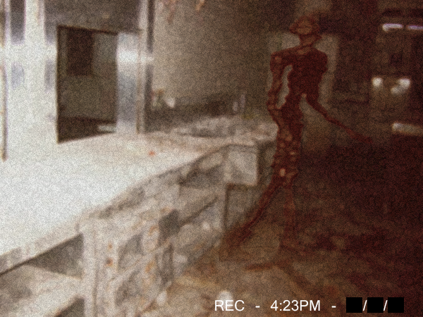

ATENÇÃO
Prezados cidadãos brasileiros, indivíduos não identificados altamente perigosos, estão invadindo o nosso país. Por causa desses acontecimentos, pedimos para que nenhum cidadão saia de sua residencia durante o lockdown para a vossa segurança, isso não é um teste. Tudo ocorrerá bem, a nossa pátria não sera derrubada! Que Deus nos ajude.
ETAPAS DE SEGURANÇA
É de estrema importancia que esses passos/etapas sejam seguidos de maneira corretamente, pedimos perdão se os pedidos parecerem absurdos, porém é uma situação de emergência! Todo cidadão deverá cumprir esseas etapas por um tempo indeterminado.
- ETAPA 1: Tranque todas as possivéis entradas e saidas da sua residência como: porta, porta dos fundos, janelas,etc.
- ETAPA 2: Desligue qualquer aparelho ou eletrônico, durante a madrugada, que emita sons, como: televisões, smartphones, computadores, etc
- ETAPA 3: Se escutar gritos de agonia ao redor á sua casa durante a noite,não dê atenção á eles, por mais que sejam pertubadores. Não vale a pena correr riscos.
- ETAPA 4: Se escutar um familiar proxímo ou amigo próximo, chamando por ajuda em um local escuro, não atenda ao seu chamado em nenhuma hipótese, quem esta te chamando com certeza não é o seu conhecido.
- ETAPA 5: Se ver uma réplica perfeita sua, parada dentro da sua casa, não tente atacar, fugir ou se esconder. Não terá mais nada que te salvara.
- ETAPA 6: Se alguma abertura de sua casa citada na ETAPA 1 for aberta aleatoriamente durante a noite, EM HIPÓTESE ALGUMA, VÁ EM DIREÇÃO Á ELA. SE ESCONDA E REZE, é o máximo que você pode fazer.
